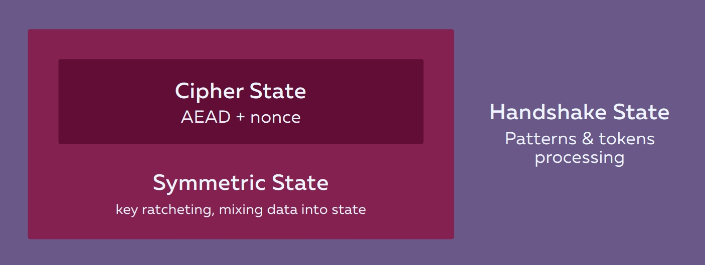
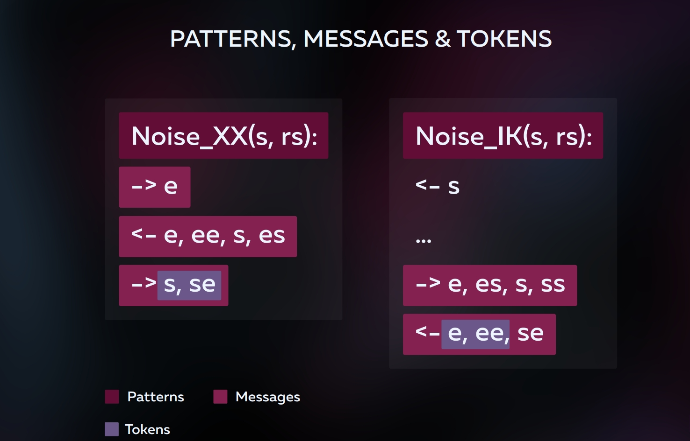
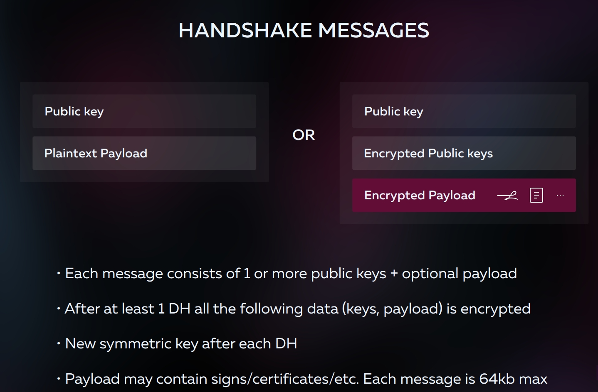
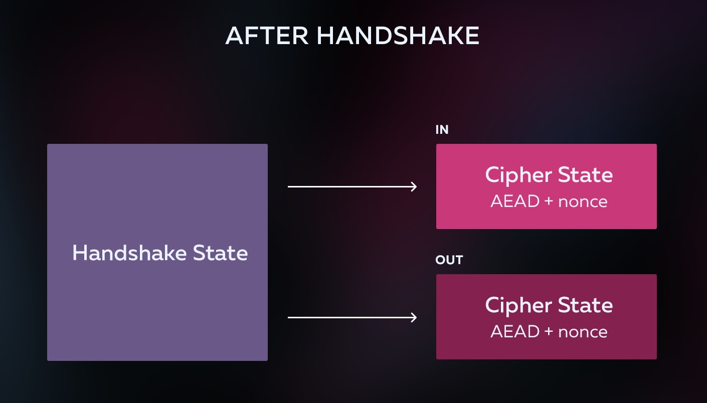
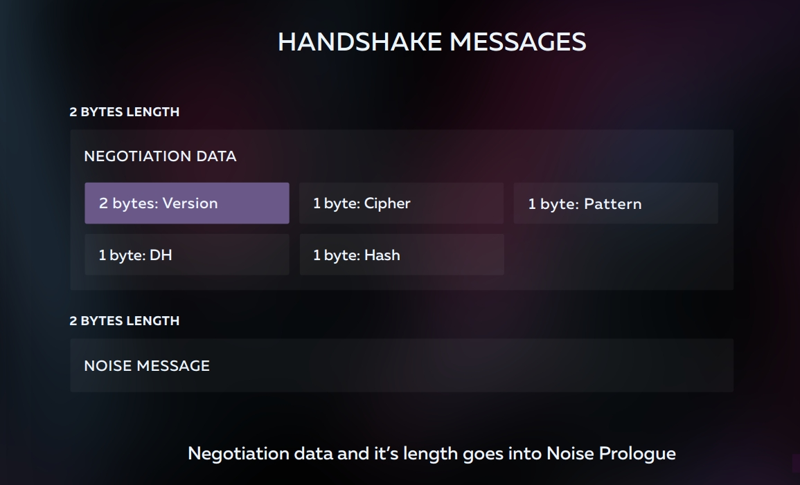

Would you like to encrypt any and all TCP connections? With NoiseSocket, you can.
Not everything in the world of networking revolves around web browsers. There are many situations where TLS (Transport Layer Security) is overkill or simply not applicable. For example, in IoT (Internet of Things) implementing the full TLS stack is a challenge because of code size, CPU constraints, the number of TLS features a developer must support, and the complexity of provisioning devices during manufacturing. There are also cases when raw public keys are sufficient (SSH, P2P (Peer to Peer), and others).
There are also use cases where encryption is still not used at all. Microservices tend to communicate with each other using unencrypted HTTP. There are also many additional inherent security concerns in TLS including untrustworthy certificate authorities, MITM (man-in-the-middle) attacks, certificate revocations, and more…
The Noise Protocol Framework (NPF) specification was published in 2016. It is a constructor of protocols for secure data transfer and simply describes the stage of the handshake and what happens after the handshake.
Trevor Perrin, the specification author, was the lead developer of Signal Messenger. The Noise Protocol is also used today by WhatsApp and its 1.3 billion monthly active users. These credentials provide excellent reasons to consider the Noise Protocol Framework in depth.
Given the Noise Protocol Framework’s simplicity and brevity, we decided to use it as the foundation for a new network layer protocol, NoiseSocket. NoiseSocket is on par with TLS in security and, in many cases, surpasses it.
Let’s first examine the core of NoiseSocket.
Noise Protocol Framework
All of the Noise Protocol Framework protocols are represented by a sequence of transmittable public keys with Diffie-Hellman (DH) operations performed on them.
There is a video by David Wong that explains how this works in a very intuitive manner.
NPF States
A main concept of the Noise Protocol Framework is that every action performed during the handshake influences the state of the protocol as well as the summary session keys. All DH operations and additional data that are transmitted or taken into account during the handshake are mixed with the general state via hashing. As a result, these data form the common symmetric keys.
All this happens inside a simple system of states that consists of three parts.

CipherState is the symmetric AEAD (Authenticated Encryption with Associated Data) cipher+nonce (count) which is initialized by some key and incremented with every call to the cryptographic function.
SymmetricState generates symmetric keys from DH results and updates them each time a new DH result is calculated. As a result, data which comes after the first DH (static keys, payload) will be encrypted by some symmetric key.
SymmetricState also hashes the additional information such as keys, optional prologue, protocol names, etc into itself. This allows the protocol to be holistic and protected at every stage of the data transfer.
HandshakeState is responsible for processing the tokens and messages.
NPF Protocols
Protocols in Noise are described by a special language which consists of patterns, messages, and tokens.
Let’s have a look at one of the protocols, Noise_XX, which allows establishing a secure connection by exchanging ephemeral and static keys of server and client:

Noise_XX is a pattern , it describes the content and sequence of messages.
( s, rs ) indicates that the client and server are initialized by their static (s) key pairs. Key pairs are generated just once. r means remote.
As we can see there are three lines with arrows. One line represents one message. The arrow indicates who the sender is. If the arrow points to the right then the client sends to the server and vice versa.
Each line consists of tokens. A token is represented by one or two letters separated by commas. A single letter token represents ephemeral or static public key and marked as e or s , respectively. An ephemeral public key is generated once per connection whereas a static one is reusable.
Two-letter tokens represent the Diffie-Hellman key agreement between a client and a server. It is easy to surmise that there may be four kinds of DH operations between different types of server and client keys: ee, es, se and ss. For example, the ee DH is responsible for randomness, whereas a DH between static keys are responsible for mutual authentication.
One of the most important features of Noise protocol is Perfect Forward Secrecy. This technology protects intercepted data from being decrypted even if your static key gets compromised.
Generally, all Noise protocols start with the transfer of an ephemeral key (token e). This way Perfect Forward Secrecy is achieved. Almost the same logic was introduced in TLS 1.3 where all non-ephemeral cipher suites were dropped.
As you can see from the XX pattern, static key can be transferred from client to server or server to client. Therefore, three messages are used there. Some patterns assume that the client has a static server key (for example, when they first made an XX) and reduce the number of messages to two. In addition, it is possible to transmit encrypted data immediately in the first message, which reduces the response time from the server.
The technology which allows a client to send encrypted data in the first handshake packet is called Zero Round Trip Time or simply 0-RTT.
Handshake

Each handshake message can be appended with the payload. These can be the top-level protocol settings, certificates, or digital signatures, anything limited to 64 kbytes. All Noise packets are limited to this size. It simplifies parsing and memory management.

As a result of the handshake we only have two symmetric keys left. These keys were obtained from the DH which was received earlier. One of the keys is for sending the messages and the second one is for their reception. After these keys are received, we should be able to send the encrypted packages, incrementing the nonce each time it is sent.
In addition to the pattern, the Noise protocol is characterized by algorithms used in each particular case. The specification includes the algorithms for DH, AEAD and Hash. These are all things required by Noise.
Default algorithms are:
DH: Curve25519, Curve448,
AEAD: AES-GCM, ChachaPoly1305,
Hash: Blake2, SHA2
All these primitives are very fast, they do not include the RSA and other old algorithms. Although, if you want, you can always implement them yourself, nothing prevents it.
NoiseSocket
We realized that this is the perfect candidate for the next generation secure transport protocol. What’s more, we needed all the necessary security features to be immediately available out of the box and the ability to use our own authentication mechanisms. Besides, the predicted size of the code must allow one to create fully protected connections with any, even the smallest, devices. So, we started to work.
We wrote the first proof of concept in Go at the beginning of 2017. Almost nothing was added to the original Noise Protocol, except the length of the packets. We announced the implementation on the Noise Mailing List. By the end of June, we finally came to a protocol version that satisfied most of our needs.
So, what did we finally add to Noise? We had several long conversations and came up with dozens of options, but we reduced it to only three things:
Negotiation Data
Padding
Processing Rules
Negotiation Data
This is just a set of bytes into which you can put anything. It is needed to coordinate algorithms and patterns between the client and the server. It looks like this:

Only 6 bytes, but that’s enough for the server to understand how to handle any Noise messages that it receives.
Padding
This is a package alignment that allows you to hide their true size and prevent any guessing of the contents. It is implemented as an additional 2 bytes at the beginning of the encrypted data, which indicates the actual packet size. All the rest is filler that needs to be thrown out.
Processing Rules
There are a few simple rules for how a server responds to a client when it receives its message or vice versa, including when a server does not understand it and wants to switch to another protocol.
Why?
Virgil Security offers public key management as a service and NoiseSocket allowed us to use raw public keys and signatures to establish connections which are no less secure than TLS. We have implemented an NGINX module that supports client and backend encryption through NoiseSocket.
You probably think that you might need to change everything to switch to NoiseSocket. There is no need for this! If you write code on Go and you have HTTP services, then you just need to replace the DialTLS method for clients and Listen method for servers, everything else will think that it works over TLS. This is all thanks to our Go library.
Looks like we have a working alternative to TLS!
You do not need to invent something on your own to build a secure link between any two nodes, while having only public keys in your hands. Tor, i2p, Bitcoin, and so on where a node is often identified with a public key, can use NoiseSocket right away without any add-ons.
SSH, VPN, and all possible tunnels can add the digital signatures of static keys and get a fully secure link without needing the OpenSSL. Here you can use libsodium or even NaCl.
The approximate size of the compiled crypto-primitives naturally depends on the architecture, but we managed to compile a minimal implementation of NoiseSocket on Arduino in just 18 kilobytes. This is the smallest secure transport protocol implementation able to run on IoT which supports PFS
Conclusion
We had high hopes for TLS 1.3 because overhead was reduced from 8 - 9 handshake round trips to 3 handshake round trips, as Noise and 25519 were added, but unfortunately:
- They decided not to add the opportunity to work without certificates, although there was such an offer to work with keys.
- It is not known when ed25519 Certificates will appear. We can already use the signatures of the ed25519 in the Noise Protocol.
In addition, not so long ago, one of the Noise patterns, IK (which is 0-RTT) received formal verification from the WireGuard VPN authors that everything works correctly. All these things only strengthened our confidence in the correctness of this choice.
Please take a look at the NoiseSocket specification. We are sure that for some of your projects you will find it more suitable than TLS. In the meantime, we await your comments and feedback.